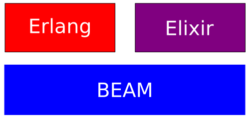
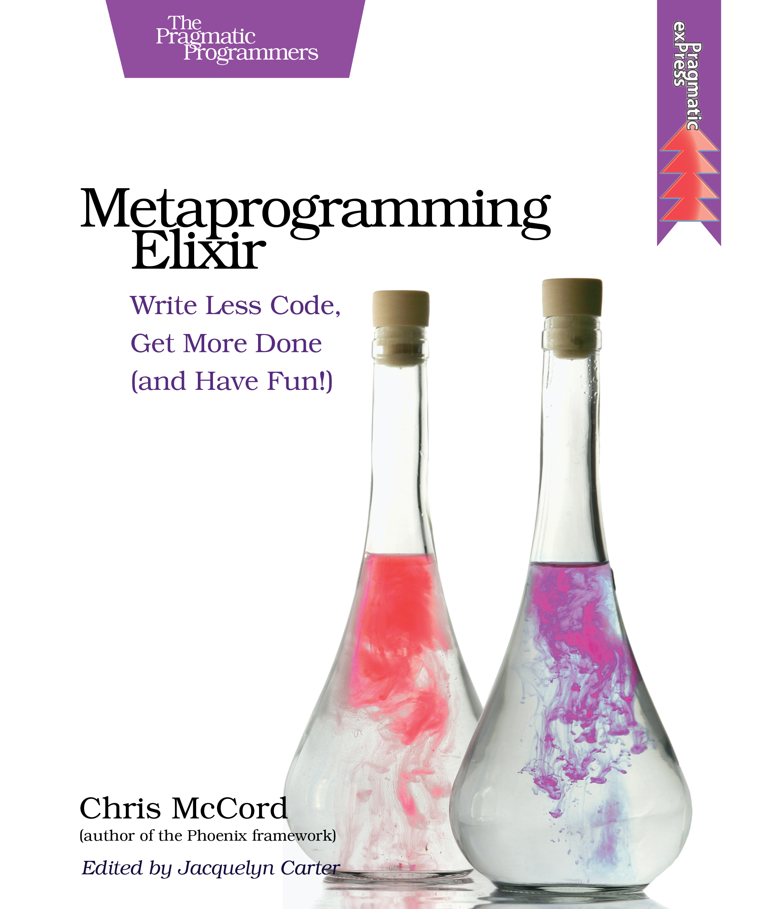

- Egresado de Codeable, 2do Cohort
- Software Engineer en Able.
- 6 años de experiencia con Elixir
- Side-Projects y trabajos freelancer.
- I love elixir ❤️
Me
Me
Contenido
Contenido
- Introducción
- Porque fue creado?
- En que esta siendo utilizado?
- Workshop
- Pattern Matching
- Functiones
- Pipe operator ❤️
Porque fue creado?
Porque fue creado?
Hasta que un joven programador, parte de la core team de Ruby on Rails, aparecio.
Jose Valim
Jose Valim
se encontro con un libro
se encontro con un libro

Companies that are using Erlang
Companies that are using Erlang

Proceso de creación (2011)
Proceso de creación (2011)

Ruby -> Elixir (Developer Joy)
Ruby -> Elixir (Developer Joy)

Erlang -> Elixir (Runtime and 40 years of libraries)
Erlang -> Elixir (Runtime and 40 years of libraries)

Clojure -> Elixir (Metaprogramación)
Clojure -> Elixir (Metaprogramación)

Elixir is what would happen if Erlang, Clojure, and Ruby somehow had a baby and it wasn’t an accident.
–Devin Torres
LiveBook
LiveBook
Thank You ʕ•ᴥ•ʔ